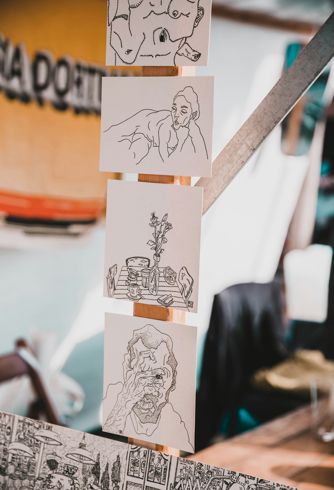

-
SUMMER DRINKS ARE HERE!
Published June 1, 2025
 Summer is in full swing at The Green Bean, and we’re thrilled to introduce our newest
seasonal drink: the Honey Citrus Cold Brew. This refreshing twist on a classic favorite combines our
smooth, slow-steeped cold brew with a splash of bright citrus, a touch of local honey, and a hint of
vanilla for balance. Served over ice and garnished with a thin orange slice, it’s the perfect pick-me-up
for hot mornings, lazy afternoons, or anytime you need a cool burst of energy with a sweet, tangy finish.
Summer is in full swing at The Green Bean, and we’re thrilled to introduce our newest
seasonal drink: the Honey Citrus Cold Brew. This refreshing twist on a classic favorite combines our
smooth, slow-steeped cold brew with a splash of bright citrus, a touch of local honey, and a hint of
vanilla for balance. Served over ice and garnished with a thin orange slice, it’s the perfect pick-me-up
for hot mornings, lazy afternoons, or anytime you need a cool burst of energy with a sweet, tangy finish.We crafted the Honey Citrus Cold Brew with our community in mind—something light, vibrant, and unmistakably summer. Whether you’re stopping by before heading to the beach or settling into our sunlit café with a good book, this drink captures the essence of the season in every sip. It’s available for a limited time, so swing by The Green Bean and taste summer while it lasts!
-
FESTIVAL FUN
Published
 This past weekend, The Green Bean proudly joined the annual Riverside Arts Market downtown—an inspiring celebration of local creativity, music, and family fun. Our team rolled out our mobile espresso cart to serve up complimentary iced lattes, mini cold brews, and delicious vegan pastries to festival-goers enjoying live artwork and local bands. Over the course of the day, we handed out nearly 200 free drinks, chatted with visitors about our café's journey from food truck to storefront, and received enthusiastic feedback on our new Honey Citrus Cold Brew, which was a summertime hit even among the festival’s hottest moments.
In addition to serving coffee, we hosted a fun pop-up contest—festival attendees guessed the number of coffee beans in a jar for a chance to win a Green Bean gift card and exclusive merch. Families gathered, kids cheered on their guesses, and smiles were all around when our winner was announced late Saturday afternoon. It was heartwarming to connect with our neighborhood on such a vibrant stage. A special thanks to the Riverside Arts Market organizers and our amazing staff for helping make the day so bright. We’re grateful for every conversation sparked and every new face who discovered our humble café through this community event.